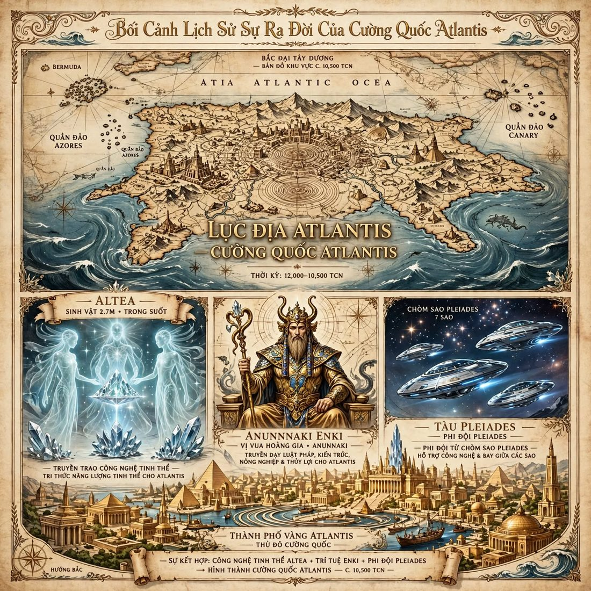
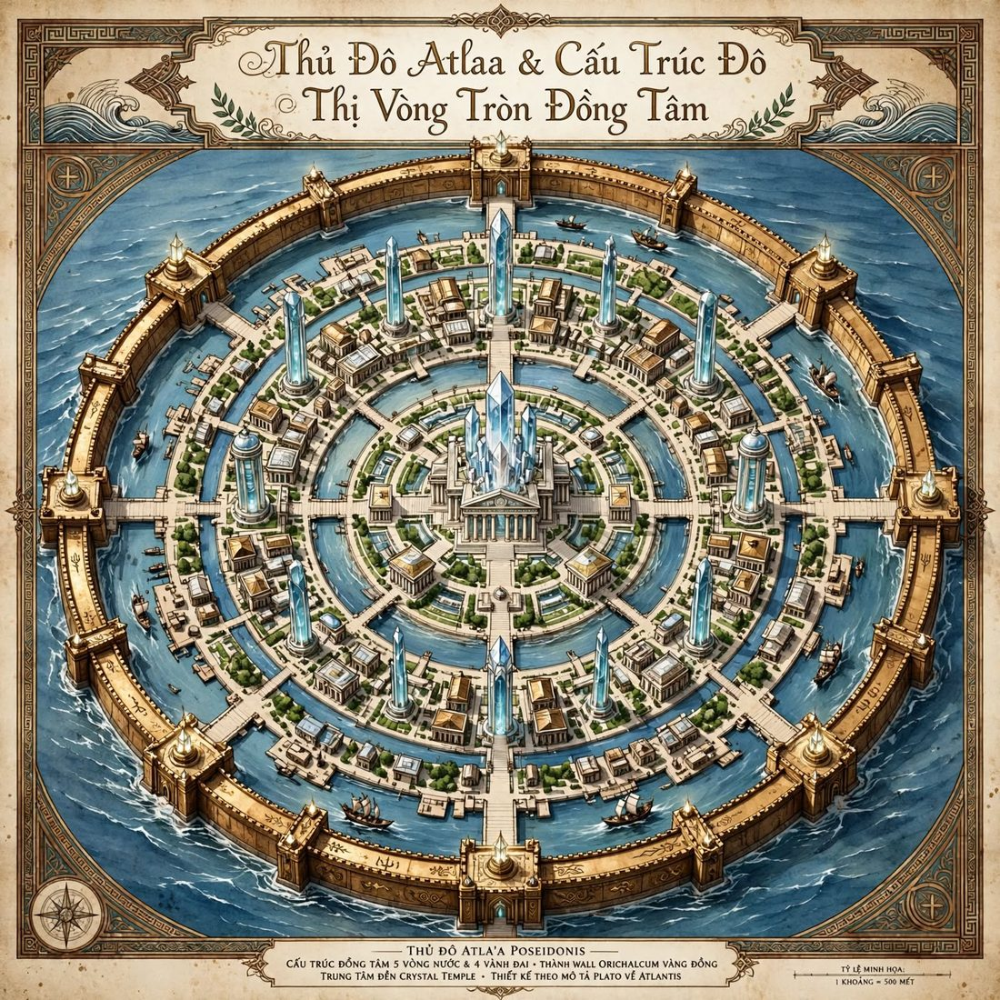
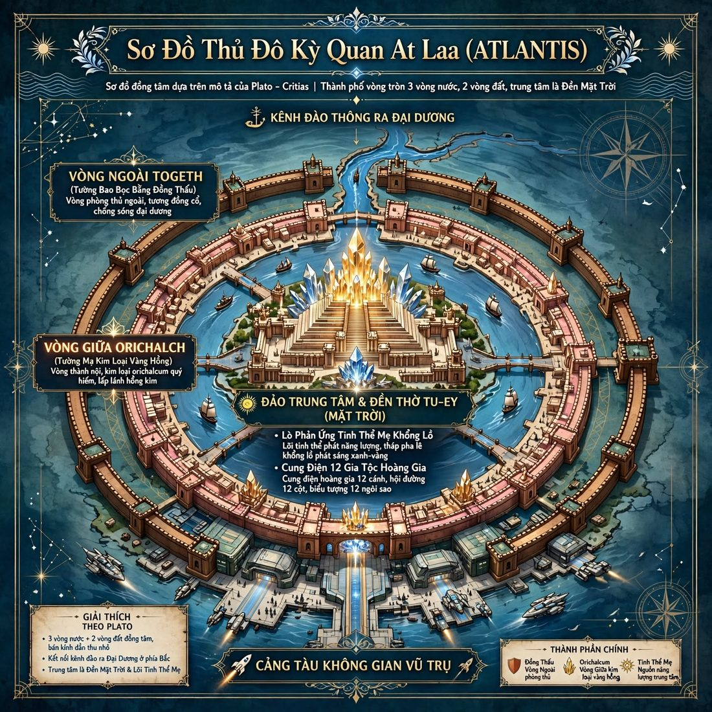
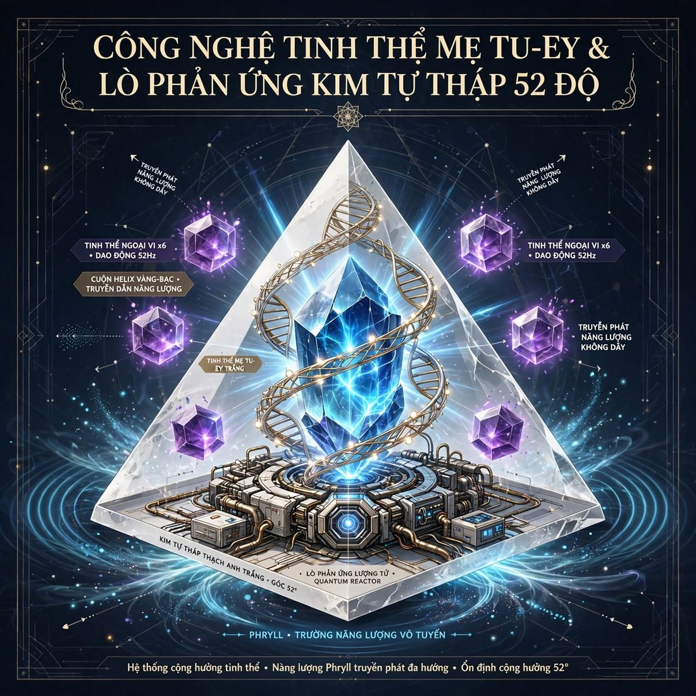
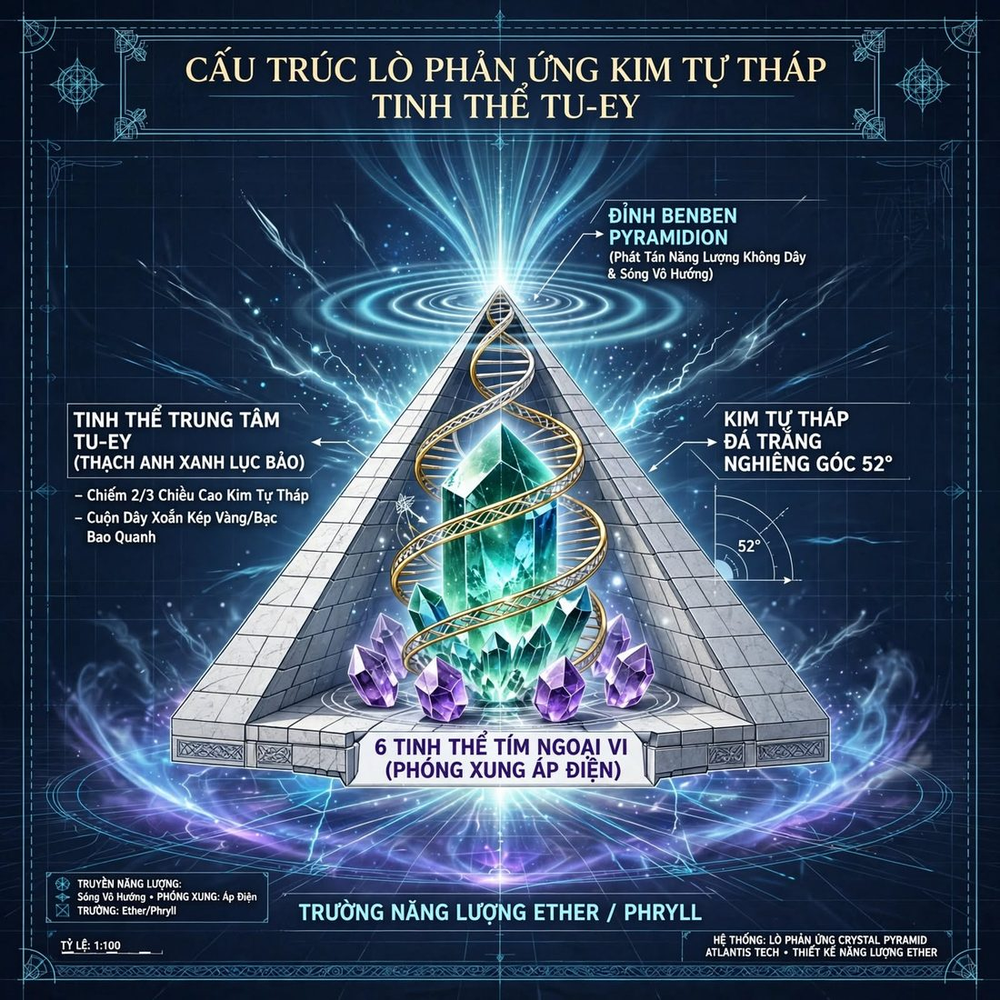
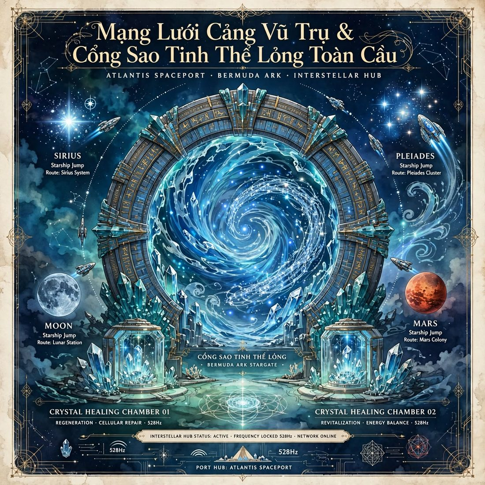
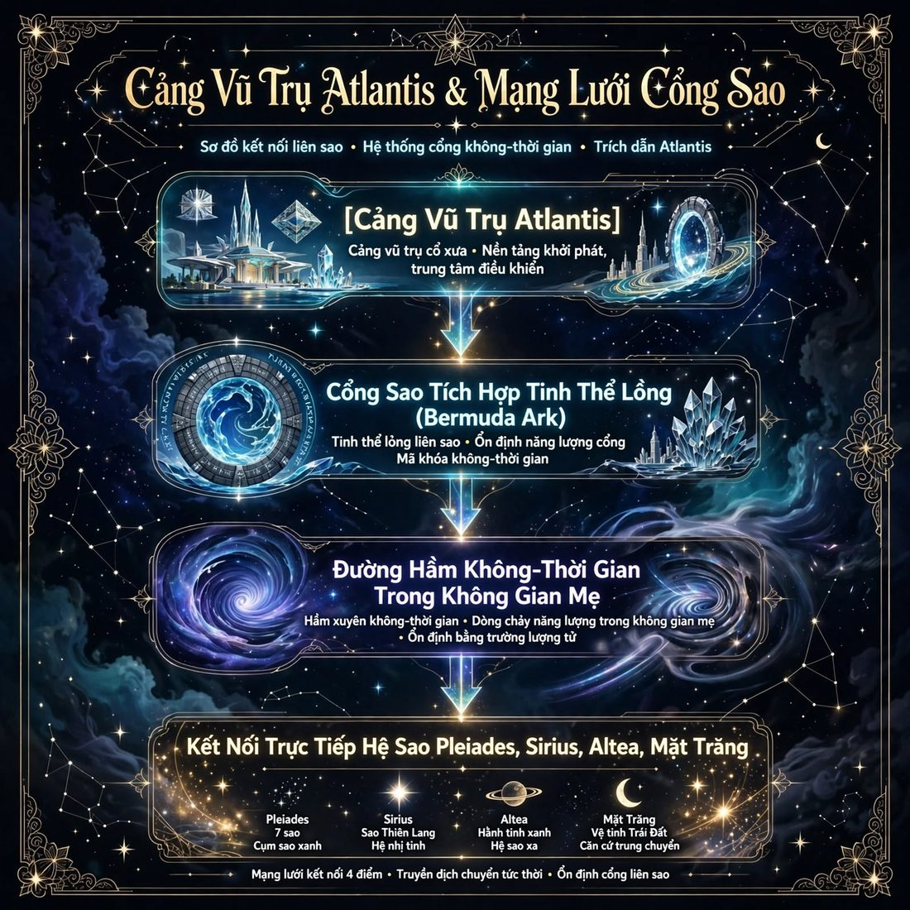
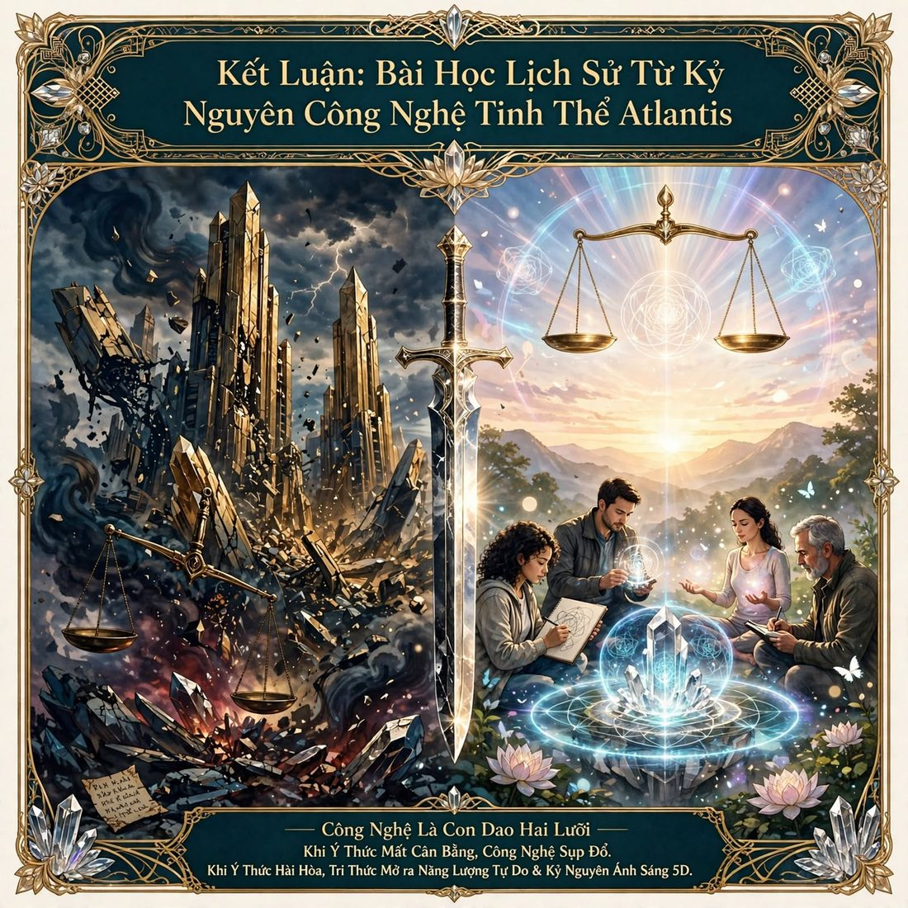

Trang chủ / Chuyên đề 10: Lịch Sử Bị Che Giấu & Nền Văn Minh Cổ Đại / Kỳ 92
Chuyên đề 10 · Kỳ 92 / 100
ĐẾ CHẾ ATLANTIS & KỶ NGUYÊN CÔNG NGHỆ TINH THỂ MẸ (CRYSTA-TECH)

1. Bối Cảnh Lịch Sử Sự Ra Đời Của Cường Quốc Atlantis
| Tiêu Chí So Sánh | Nền Văn Minh Lemuria (Mu) | Nền Văn Minh Atlantis |
|---|---|---|
| Vị Trí Địa Lý | Đại lục Thái Bình Dương (Hawaii - New Zealand - Đảo Phục Sinh) | Lục địa Bắc Đại Tây Dương (Bermuda - Azores - Caribe - Khem) |
| Trọng Tâm Phát Triển | Tâm thức 5D, hòa hợp tự nhiên, ma trận nước, âm học Solfeggio | Công nghệ tinh thể (Crysta-Tech), kỹ thuật siêu chiều, Cổng Sao |
| Cấu Trúc Đô Thị | Vòm thực vật sống, đền thờ tinh thể thạch anh lục giác | Đô thị vòng tròn đồng tâm, tháp phát điện không dây, cảng vũ trụ |
| Hình Thức Quản Trị | Mạng lưới Hội đồng Tư tế thấu cảm, Ý thức Nhóm | 12 Gia tộc Hoàng gia (Guardians), Hội đồng Khoa học Atlaa |

Trong hải đồ thời gian của hành tinh Gaia, nếu như Lemuria (Mu) đại diện cho đỉnh cao của sự hòa hợp tâm thức 5D nguyên thủy và lối sống cộng hưởng tự nhiên, thì đế chế Atlantis lại là biểu tượng rực rỡ nhất của sự phát triển khoa học công nghệ, kỹ thuật siêu chiều và sự giao thoa văn hóa đa thiên hà.
Theo các báo cáo giải mật exopolitics từ Elena Danaan, Alex Collier, Swaruu và các thông điệp truyền thông từ hạm đội Liên minh Liên Thiên hà (Intergalactic Confederation / Seeders), sự thành lập của nền văn minh Atlantis diễn ra cách đây khoảng 32.400 năm trước Công nguyên. Vùng đất Atlantis cổ đại ban đầu là một hòn đảo lục địa khổng lồ nằm ở khu vực Bắc Đại Tây Dương (kéo dài từ khu vực Bermuda, biển Caribe đến vùng biển Azores, quần đảo Canary và bờ biển Tây Bắc Châu Phi).
Đế chế Atlantis được kiến tạo dựa trên sự hợp tác di truyền và công nghệ của ba lực lượng thiên hà chính:
- Chủng tộc Altea (Thuộc 24 Đấng Sáng Lập Paa-Taal): Người Altea đến từ thiên hà NGC 7331 (cụm Pegasus). Họ là những sinh mệnh hình người cao 2,7m, da trắng mờ bán trong suốt, sở hữu trí tuệ 6D+ và là những bậc thầy tối cao về công nghệ tinh thể lượng tử. Người Altea đã xây dựng nên thủ đô nguyên thủy Atlaa và trao tặng viên Tinh thể Mẹ Tu-Ey cho nhân loại.
- Nhánh Pleiades (Hệ sao Atlas & Taygeta): Nhánh người Pleiades di cư đã định cư tại các quần đảo Atlantis, đặt tên cho đại dương là Đại Tây Dương (Atlantic) và đặt tên cho các vị vua cai trị theo dòng họ Atlas.
- Hoàng gia Anunnaki (Nhánh Enki / Ea): Hoàng tử Enki đã thiết lập các trạm nghiên cứu di truyền và đô thị cảng sông tại Atlantis trước khi trao lại quyền quản lý cho người Altea và 12 gia tộc hoàng gia Atlantis.
2. Thủ Đô Atlaa & Cấu Trúc Đô Thị Vòng Tròn Đồng Tâm


Thủ đô của Atlantis — được gọi là Atlaa (hoặc Poseidonis trong tài liệu Hy Lạp cổ đại) — là một kỳ quan kiến trúc và quy hoạch đô thị vượt xa mọi tiêu chuẩn xây dựng hiện đại. Theo mô tả trong các cuộc thoại Socrates của Plato (Timaeus & Critias) kết hợp với ký ức di truyền từ Oona (Altean Seeder) và Matias De Stefano, thủ đô Atlaa được xây dựng trên một hòn đảo trung tâm tròn xoay, bao bọc xung quanh bởi các kênh đào và dải đất hình vòng tròn đồng tâm liên hoàn.
Cấu trúc quy hoạch của Atlaa mang ý nghĩa hình học thiêng liêng và công năng từ trường sâu sắc:
- Các vòng đất và kênh đào đồng tâm: Nước biển từ Đại Tây Dương được dẫn chạy qua ba vòng kênh đào hình tròn. Sự lưu thông liên tục của nước mặn đóng vai trò là chất điện phân tự nhiên, kết hợp với từ trường Trái Đất để tạo ra nguồn năng lượng điện từ hydro tích tụ cho thành phố.
- Lớp tường bảo vệ kim loại: Vòng tường ngoài cùng được bọc bằng hợp kim đồng thau; vòng tường giữa được bọc bằng Orichalcum (loại kim loại huyền thoại ánh sắc vàng hồng, có khả năng dẫn truyền sóng vô hướng và phản xạ tia laser); vòng tường trong cùng bao bọc Đảo Trung Tâm được dát bằng kim loại vàng tinh khiết.
- Đảo trung tâm & ngọn núi thánh: Nơi đặt Đền thờ Tinh thể Mẹ Tu-Ey, các viện nghiên cứu giả kim lượng tử, cùng cung điện của 12 gia tộc cai trị. Ngọn núi trung tâm phản chiếu ánh nắng mặt trời rực rỡ, nhìn từ xa như một ngọn tháp ánh sáng mọc lên từ lòng hồ.
3. Công Nghệ Tinh Thể Mẹ Tu-Ey & Lò Phản Ứng Kim Tự Tháp 52 Độ


Trái tim năng lượng vận hành toàn bộ đế chế Atlantis chính là Công Nghệ Tinh Thể Mẹ (Master Crystal Technology / Crysta-Tech). Người Atlantis không sử dụng dây điện cồng kềnh, nhiên liệu hóa thạch hay hạt nhân nguyên tử thô hại. Toàn bộ năng lượng chiếu sáng, giao thông, sưởi ấm, y học và du hành không gian đều được cung cấp bởi hệ thống lò phản ứng tinh thể lượng tử.
- Kim tự tháp góc nghiêng 52 độ: Tòa đền trung tâm được đúc bằng đá thạch anh trắng bóng phản chiếu ánh sáng. Bức tường kim tự tháp được xây dựng chuẩn xác theo góc nghiêng 52 độ — góc hình học tối ưu để thu hoạch và hội tụ sóng dọc từ trường (Telluric & Scalar Waves).
- Viên Tinh thể Tu-Ey: Nằm ở trung tâm kim tự tháp là viên Tinh thể Mẹ Tu-Ey khổng lồ, cao bằng 2/3 chiều cao kim tự tháp. Tinh thể này có cấu trúc thạch anh nhiều cạnh, phát ra ánh sáng màu xanh dương điện (electric blue) rực rỡ khi được ánh sáng Mặt Trời kích hoạt.
- Cuộn dây xoắn kép vàng & bạc: Quấn quanh viên tinh thể trung tâm là hai cuộn dây kim loại tinh khiết (một cuộn vàng đại diện cho cực dương/Mặt Trời, một cuộn bạc đại diện cho cực âm/Mặt Trăng) xoắn ốc theo hai hướng ngược nhau để tạo ra trường xoáy gia tốc hạt.
- Sáu tinh thể tím ngoại vi: Trên mặt đất xung quanh bệ máy là 6 viên tinh thể thạch anh màu tím nhỏ hơn nghiêng góc hội tụ về phía viên Tu-Ey. Khi được kích hoạt, chúng phóng ra các xung điện áp điện (piezoelectric pulses), nạp năng lượng sinh lực Phryll vào tinh thể trung tâm.
Khi năng lượng Phryll tích tụ đạt điểm tới hạn bên trong viên Tu-Ey, nó phun trào lên đỉnh kim tự tháp như một đài phun ánh sáng rực rỡ. Kim tự tháp hấp thụ chùm sáng này và phát tán năng lượng không dây (Wireless Energy Broadcast) xuyên qua không gian. Bất kỳ tàu thuyền, phi thuyền bay hay thiết bị dân dụng nào tại Atlantis có cài đặt tần số khớp nối đều có thể tự động thu nhận điện năng để vận hành liên tục mà không cần nạp nhiên liệu.
4. Mạng Lưới Cảng Vũ Trụ & Cổng Sao Tinh Thể Lỏng Toàn Cầu


Nhờ nguồn năng lượng vô hạn từ công nghệ Crysta-Tech, Atlantis không chỉ là một cường quốc mặt đất mà còn vươn lên thành Trung Tâm Giao Thương Vũ Trụ (Interstellar Hub) của toàn bộ Hệ Mặt Trời.
Mạng lưới Cổng Sao (Stargates / Jump Doors). Ở phía Tây thủ đô Atlaa (khu vực Tam giác Bermuda ngày nay), người Atlantis phối hợp với chủng tộc Altea đã xây dựng một Cổng Sao Lượng Tử Khổng Lồ. Cổng Sao này sử dụng chất siêu lỏng phát quang màu xanh lam (tinh thể lỏng năng lượng tối) tạo ra các xoáy cuộn vô hướng, cho phép các con tàu thương mại và tàu thám hiểm dịch chuyển tức thời từ Trái Đất đến các trạm vũ trụ trên Mặt Trăng, Sao Hỏa, Sao Kim hoặc đi thẳng về hệ sao Pleiades và Sirius mà không mất thời gian du hành trong không gian vật lý 3D.
Y học tinh thể & tái tạo tế bào. Trong lĩnh vực y tế, người Atlantis đạt tới đỉnh cao của sự làm chủ sinh học. Họ sử dụng các viên tinh thể pha lê thạch anh được lập trình tần số âm thanh để quét và điều chỉnh lại trường hào quang của bệnh nhân. Buồng Tinh Thể Tái Tạo (Crystal Regeneration Chambers) cho phép người bệnh nằm vào buồng tinh thể, dải tần số 528 Hz kết hợp với ánh sáng sắc màu sẽ tự động tái cấu trúc các liên kết mô, đảo ngược tiến trình lão hóa và phục hồi các tổn thương cơ quan sinh học chỉ trong vài giờ.
5. Kết Luận: Bài Học Từ Kỷ Nguyên Công Nghệ Tinh Thể

Kỷ nguyên Hoàng kim của Atlantis là bằng chứng sống động cho thấy khả năng phi thường của con người khi kết hợp trí tuệ đỉnh cao với khoa học năng lượng vũ trụ. Công nghệ Crysta-Tech, tháp năng lượng không dây và Cổng Sao không phải là những viễn tưởng phi thực tế, mà là Di Sản Khoa Học Lượng Tử từng tồn tại rực rỡ trên Quê hương Trái Đất.
Tuy nhiên, sự phát triển rực rỡ của Atlantis cũng gieo mầm cho những bài học lịch sử đắt giá: Khi công nghệ vươn tới đỉnh cao nhưng tâm thức và đạo đức bị xem nhẹ, chính sức mạnh công nghệ đó sẽ biến thành lưỡi dao hai lưỡi. Việc thấu hiểu về kỷ nguyên Crysta-Tech giúp nhân loại hiện đại nhận diện lại tiềm năng vô tận của năng lượng tự do Etheric, chuẩn bị tâm thức và trí tuệ để khôi phục lại kho báu khoa học cổ đại trong Kỷ nguyên Ánh sáng 5D sắp tới.